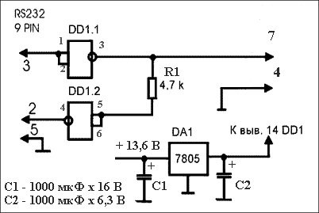
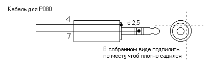
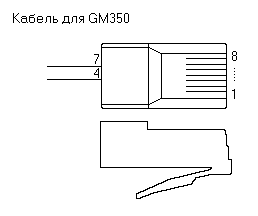

Программатор для радиостанций Motorola.
Программатор — универсальный компьютерный интерфейс,
иначе RIB - Radio Interface Box,
предназначен для программирования и перепрограммирования практически
всего спектра носимых и автомобильно-стационарных радиостанций компании
Motorola выпускавшихся до 2005 года.
Программирование радиостанций осуществляется с компьютера
оснащенного портом RS232 (COM-Port).
COM-Port компьютера состоит из микросхемы - контроллера
последовательного порта и микросхемы-драйвера, приводящие внешние
сигналы порта в соответствие с протоколом RS-232.
Микросхема-драйвер
принадлежит к многочисленному семейству MAX-2xx, MAX-32xx или их
аналогам.
Драйвер воспринимает как двуполярные входные сигналы размахом
25 В, так и ТТЛ-уровни. Внешние цепи и сигналы порта имеют следующие
свойства:
- входные уровни: логическая единица - (-25…0,8)
В, логический нуль - (2,4…25) В;
- входы драйвера соединены
с землей внутренними резисторами (3…7) кОм;
- выходные
уровни: логическая единица - (-5…-10) В, логический нуль -
(5…10) В при нагрузке всех выходов относительно земли
сопротивлениями не менее 3 кОм;
- допустимо долговременное замыкание на
землю (но не на другой выход) выходов порта.
Основная задача программатора - инвертировать уровни сигналов,
посколько для последовательного порта логическая единица представляет
собой низкое напряжение, а логический ноль - высокое.
Из всего разнообразия я использовал схему,
предложенную UN7QBQ.
Обратите внимание на то, что универсальный
интерфейс нуждается во внешнем питании и не функционирует как
самостоятельное устройство.
В качестве внешнего
источника питания удобно
использовать трансформаторные блоки питания от старых телефонных
аппаратов с АОН, которые имеют стабилизатор на микросхеме К142ЕН5А.
Применяемые микросхемы - 561ЛА7 или 561ЛЕ5. Входные цепи
неиспользующихся логических элементов
через резистор 1 кОм необходимо соединить с минусовым выходом источника
питания. На один из свободных выходов микросхемы через резистор 300 Ом
можно подключить светодиод, для контроля.
КАБЕЛИ ДЛЯ ПРОГРАММИРОВАНИЯ РАДИОСТАНЦИЙ MOTOROLA.

Кабель для программированиярадиостанций Р040, Р080.
Разъём делается из миниджека диаметром 2,5мм. В радиостанции ответная часть утоплена, поэтому по месту нужно подпилить. Пунктрирные линии показывают примерно линии спиливания разъёма.
Пособие по программированию радиостанций Motorola P серии.

Кабель для программирования GM350, GM160, GM360.
Используется стандартный RJ-45 разъем с 8-ю контактами. Я использовал 30-ти сантиметровый кусок обжатого кабеля UTP.
Радиостанции возимые серии GM. Руководство по эксплуатации.
ПОРЯДОК ПРОГРАММИРОВАНИЯ РАДИОСТАНЦИЙ.
1. Подключить программатор к порту
компьютера, при
этом кампьютер должен быть откючен.
Включить программатор, а затем компьютер.
2. Подключить радиостанцию к блоку питания или
полностью заряженному аккумулятору. Контакты питания должны быть
надёжны.
3.
Подключить программатор к разъёму радиостанции,
убедиться в надёжности контактов. Включить радиостанцию ручкой или
кнопкой на передней панели.
4. Запустить соответствующую программу для
программирования радиостанций Motorola.
5. Прочитать информацию из станции согласно
указаниями или справке к программе, сохранить информацию в файл на диск
под соответствующим именем.
6. Модифицировать настройки, сохранить их в файл на
диск.
7. Согласно указаниями или справке к программе
записать настройки в радиостанцию.
8. Выключить радиостанцию ручкой или кнопкой.
Отключить станцию от программатора.
9. При необходимости подключить к радиостанции
гарнитуру, включить и проверить станцию.
10. Выключить станцию, отключить от блока питания.
Программирование завершено.
Soft для программирования радиостанций Motorola можно взять здесь.
Владимир, EW7AS
Главная | О своём городе | Антенны | Радиосвязь на КВ | Радиосвязь на УКВ | Гостевая
Copyright © 2014 Сайт радиолюбителей г. Климовичи | Design studio «Zurbagan»